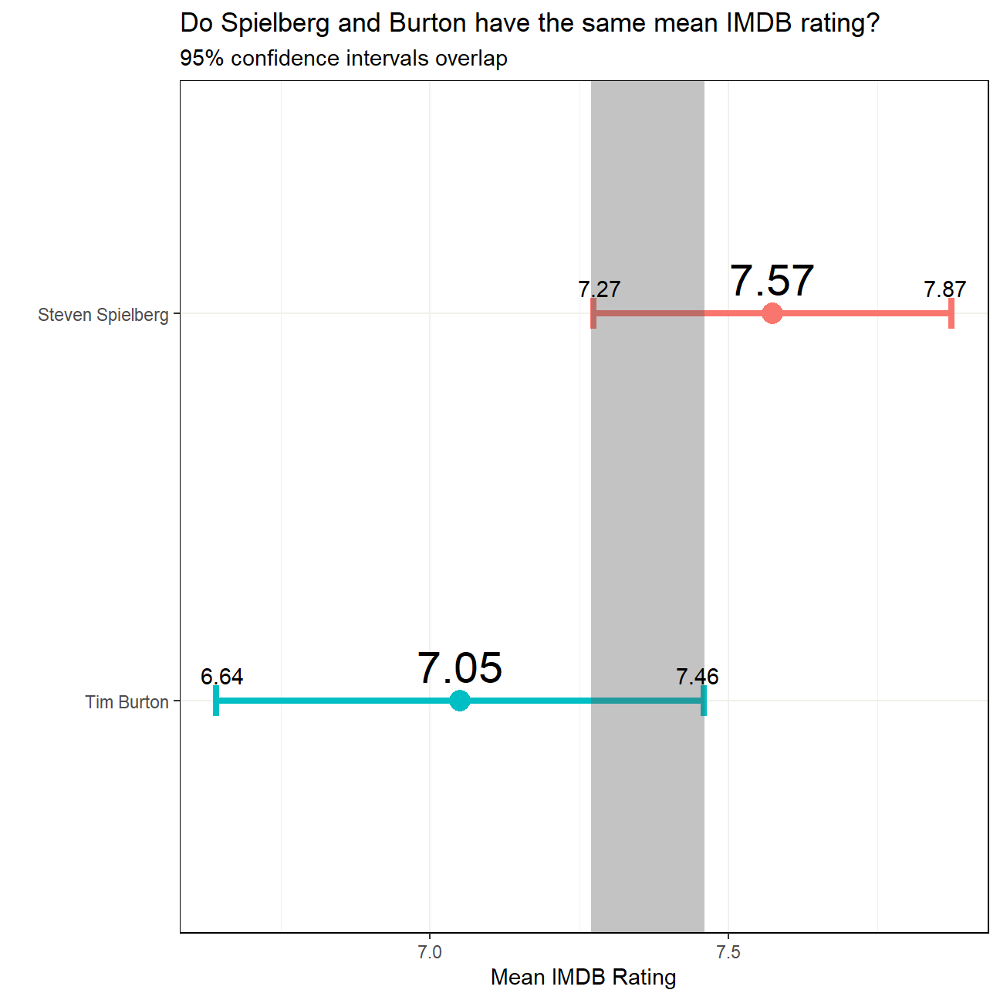
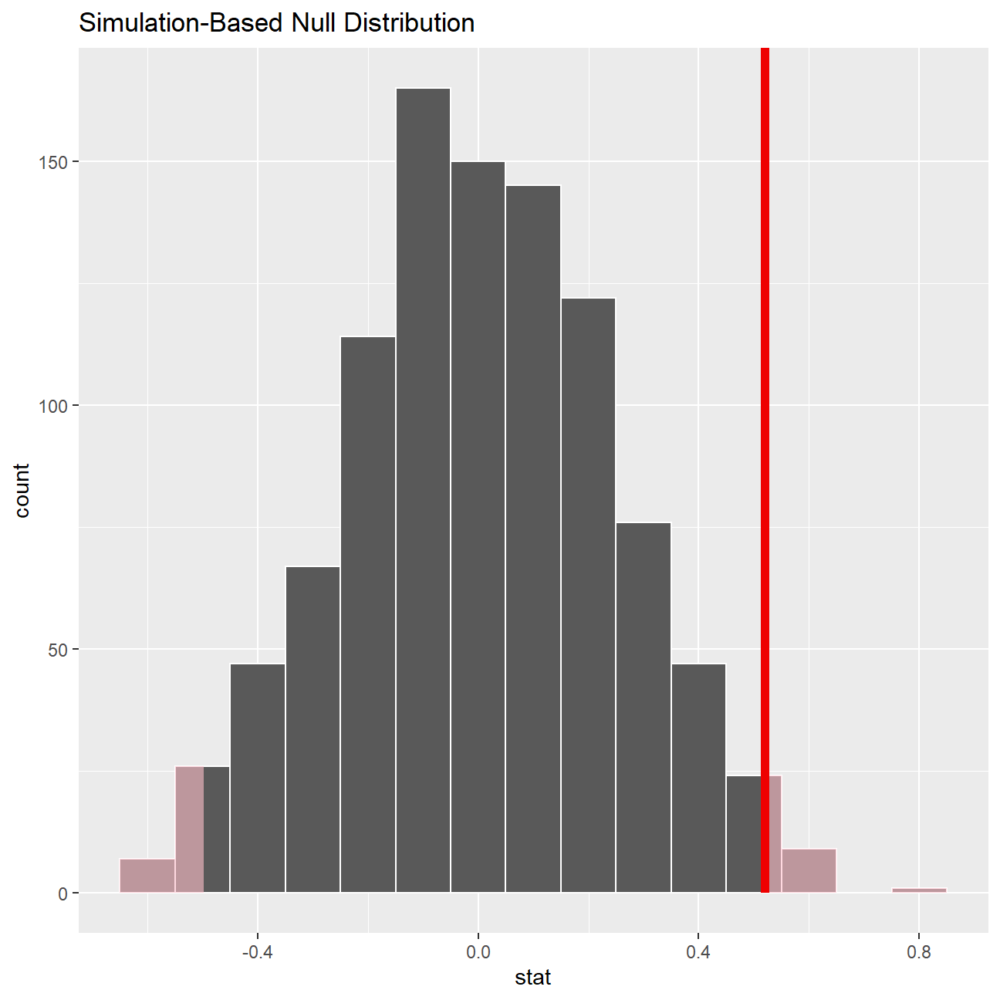
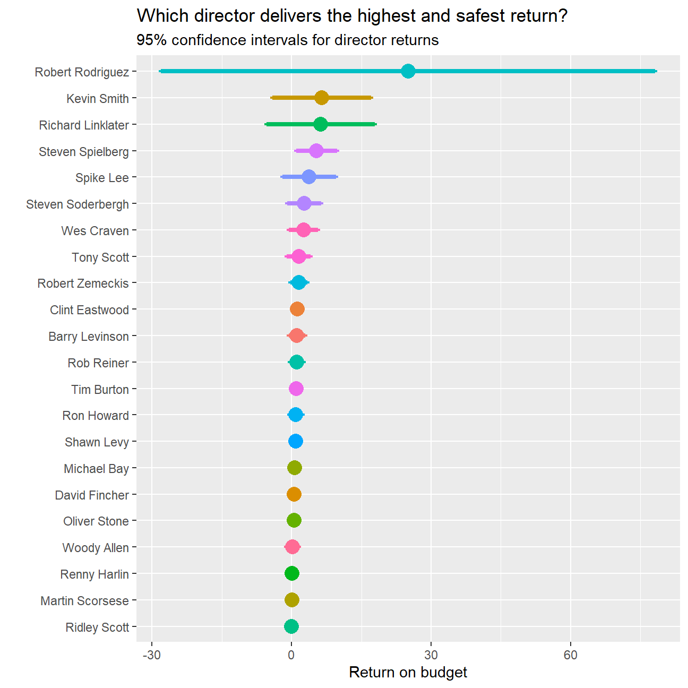
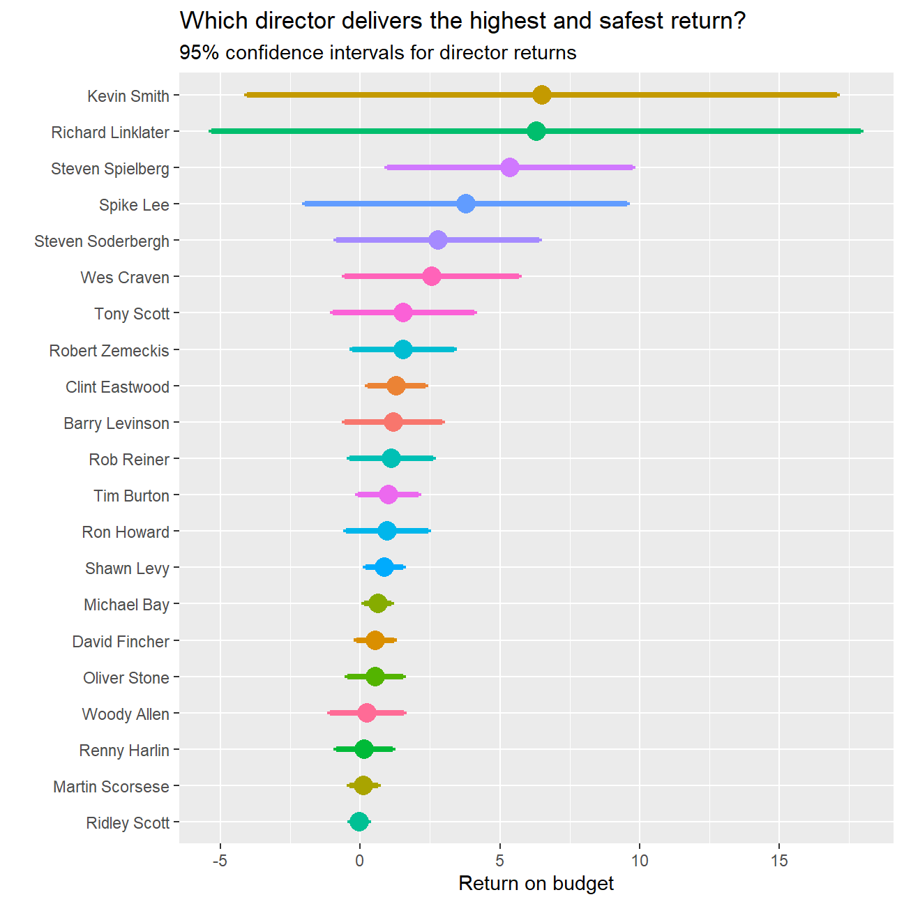
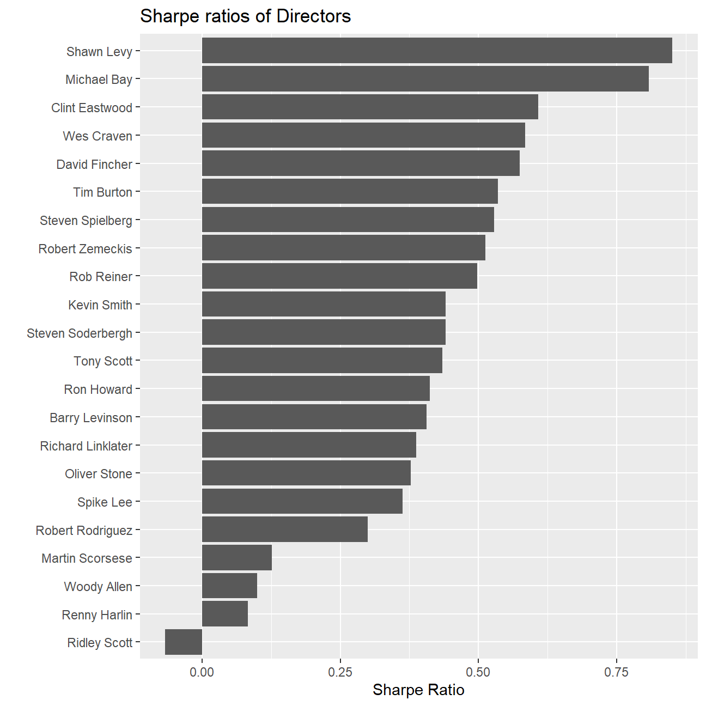

Recall the IMBD ratings data. In this section we explore whether the mean IMDB rating for Steven Spielberg and Tim Burton are the same or not.
We load the data and examine its structure
#we examine the data
movies <- read_csv(here::here("content", "projects", "blockbusters", "movies.csv"))
glimpse(movies)## Rows: 2,961
## Columns: 11
## $ title <chr> "Avatar", "Titanic", "Jurassic World", "The Ave...
## $ genre <chr> "Action", "Drama", "Action", "Action", "Action"...
## $ director <chr> "James Cameron", "James Cameron", "Colin Trevor...
## $ year <dbl> 2009, 1997, 2015, 2012, 2008, 1999, 1977, 2015,...
## $ duration <dbl> 178, 194, 124, 173, 152, 136, 125, 141, 164, 93...
## $ gross <dbl> 7.61e+08, 6.59e+08, 6.52e+08, 6.23e+08, 5.33e+0...
## $ budget <dbl> 2.37e+08, 2.00e+08, 1.50e+08, 2.20e+08, 1.85e+0...
## $ cast_facebook_likes <dbl> 4834, 45223, 8458, 87697, 57802, 37723, 13485, ...
## $ votes <dbl> 886204, 793059, 418214, 995415, 1676169, 534658...
## $ reviews <dbl> 3777, 2843, 1934, 2425, 5312, 3917, 1752, 1752,...
## $ rating <dbl> 7.9, 7.7, 7.0, 8.1, 9.0, 6.5, 8.7, 7.5, 8.5, 7....Your R code and analysis should go here. If you want to insert a blank chunk of R code you can just hit Ctrl/Cmd+Alt+I
#we check whether there are any duplicate entries
skim(movies)| Name | movies |
| Number of rows | 2961 |
| Number of columns | 11 |
| _______________________ | |
| Column type frequency: | |
| character | 3 |
| numeric | 8 |
| ________________________ | |
| Group variables | None |
Variable type: character
| skim_variable | n_missing | complete_rate | min | max | empty | n_unique | whitespace |
|---|---|---|---|---|---|---|---|
| title | 0 | 1 | 1 | 83 | 0 | 2907 | 0 |
| genre | 0 | 1 | 5 | 11 | 0 | 17 | 0 |
| director | 0 | 1 | 3 | 32 | 0 | 1366 | 0 |
Variable type: numeric
| skim_variable | n_missing | complete_rate | mean | sd | p0 | p25 | p50 | p75 | p100 | hist |
|---|---|---|---|---|---|---|---|---|---|---|
| year | 0 | 1 | 2.00e+03 | 9.95e+00 | 1920.0 | 2.00e+03 | 2.00e+03 | 2.01e+03 | 2.02e+03 | ▁▁▁▂▇ |
| duration | 0 | 1 | 1.10e+02 | 2.22e+01 | 37.0 | 9.50e+01 | 1.06e+02 | 1.19e+02 | 3.30e+02 | ▃▇▁▁▁ |
| gross | 0 | 1 | 5.81e+07 | 7.25e+07 | 703.0 | 1.23e+07 | 3.47e+07 | 7.56e+07 | 7.61e+08 | ▇▁▁▁▁ |
| budget | 0 | 1 | 4.06e+07 | 4.37e+07 | 218.0 | 1.10e+07 | 2.60e+07 | 5.50e+07 | 3.00e+08 | ▇▂▁▁▁ |
| cast_facebook_likes | 0 | 1 | 1.24e+04 | 2.05e+04 | 0.0 | 2.24e+03 | 4.60e+03 | 1.69e+04 | 6.57e+05 | ▇▁▁▁▁ |
| votes | 0 | 1 | 1.09e+05 | 1.58e+05 | 5.0 | 1.99e+04 | 5.57e+04 | 1.33e+05 | 1.69e+06 | ▇▁▁▁▁ |
| reviews | 0 | 1 | 5.03e+02 | 4.94e+02 | 2.0 | 1.99e+02 | 3.64e+02 | 6.31e+02 | 5.31e+03 | ▇▁▁▁▁ |
| rating | 0 | 1 | 6.39e+00 | 1.05e+00 | 1.6 | 5.80e+00 | 6.50e+00 | 7.10e+00 | 9.30e+00 | ▁▁▆▇▁ |
#there are fewer unique titles than rows, so we need to take rid of duplicate entries
movies_cleaned <-movies %>%
distinct(title, .keep_all = TRUE)
#we check the dataset again, to see whether issue has been corrected
skim(movies_cleaned)| Name | movies_cleaned |
| Number of rows | 2907 |
| Number of columns | 11 |
| _______________________ | |
| Column type frequency: | |
| character | 3 |
| numeric | 8 |
| ________________________ | |
| Group variables | None |
Variable type: character
| skim_variable | n_missing | complete_rate | min | max | empty | n_unique | whitespace |
|---|---|---|---|---|---|---|---|
| title | 0 | 1 | 1 | 83 | 0 | 2907 | 0 |
| genre | 0 | 1 | 5 | 11 | 0 | 17 | 0 |
| director | 0 | 1 | 3 | 32 | 0 | 1366 | 0 |
Variable type: numeric
| skim_variable | n_missing | complete_rate | mean | sd | p0 | p25 | p50 | p75 | p100 | hist |
|---|---|---|---|---|---|---|---|---|---|---|
| year | 0 | 1 | 2.00e+03 | 9.92e+00 | 1920.0 | 2.00e+03 | 2.00e+03 | 2.01e+03 | 2.02e+03 | ▁▁▁▂▇ |
| duration | 0 | 1 | 1.10e+02 | 2.23e+01 | 37.0 | 9.50e+01 | 1.05e+02 | 1.19e+02 | 3.30e+02 | ▃▇▁▁▁ |
| gross | 0 | 1 | 5.76e+07 | 7.23e+07 | 703.0 | 1.20e+07 | 3.45e+07 | 7.51e+07 | 7.61e+08 | ▇▁▁▁▁ |
| budget | 0 | 1 | 4.02e+07 | 4.32e+07 | 218.0 | 1.10e+07 | 2.50e+07 | 5.50e+07 | 3.00e+08 | ▇▂▁▁▁ |
| cast_facebook_likes | 0 | 1 | 1.23e+04 | 2.05e+04 | 0.0 | 2.22e+03 | 4.54e+03 | 1.68e+04 | 6.57e+05 | ▇▁▁▁▁ |
| votes | 0 | 1 | 1.09e+05 | 1.59e+05 | 5.0 | 1.95e+04 | 5.47e+04 | 1.32e+05 | 1.69e+06 | ▇▁▁▁▁ |
| reviews | 0 | 1 | 4.98e+02 | 4.93e+02 | 2.0 | 1.97e+02 | 3.58e+02 | 6.24e+02 | 5.31e+03 | ▇▁▁▁▁ |
| rating | 0 | 1 | 6.39e+00 | 1.06e+00 | 1.6 | 5.80e+00 | 6.50e+00 | 7.10e+00 | 9.30e+00 | ▁▁▆▇▁ |
#we create a new data set creating only useful rows of the two directors studied
useful_movies<-movies_cleaned %>%
filter((director=="Steven Spielberg")|(director=="Tim Burton"))
#we use only useful data
director_confidence_interval<-useful_movies %>%
#thanks to previously filtering data we can group_by director to get useful output for both directors
group_by(director)%>%
summarise(movies=n(),
mean=mean(rating,na.rm=TRUE),
sd=sd(rating, na.rm=TRUE),
lower=mean-abs(qt(0.025,(movies-1)))*(sd/sqrt(movies)),
higher=mean+abs(qt(0.025,(movies-1)))*(sd/sqrt(movies)))
director_confidence_interval## # A tibble: 2 x 6
## director movies mean sd lower higher
## <chr> <int> <dbl> <dbl> <dbl> <dbl>
## 1 Steven Spielberg 23 7.57 0.695 7.27 7.87
## 2 Tim Burton 14 7.05 0.708 6.64 7.46NULL## NULL#using table with calculations, setting order
ggplot(director_confidence_interval, aes(x=mean, y=reorder(director,mean), colour=director))+
#plot mean
geom_point(aes(size=1.4))+
#plot confidence interval around mean
geom_errorbarh(aes(xmax=higher, xmin=lower),
# setting width of whiskers and thickness of line
width=0.08, size=1.5)+
#adding shaded overlap
geom_rect(aes(xmin=7.27, xmax=7.46, ymin=-Inf, ymax=Inf), color=NA, alpha=0.2)+
#set up titles and axes
labs(title="Do Spielberg and Burton have the same mean IMDB rating?", subtitle="95% confidence intervals overlap", x= "Mean IMDB Rating", y= "" )+
#remove legend
theme(legend.position="none")+
#setting background
theme(strip.background = element_rect(
color="black", fill="white", linetype="solid"), panel.background = element_rect(fill = "white"),panel.grid=element_line(size=0.5, colour="#F1F1EB"), panel.border = element_rect(fill=NA))+
#placing labels, adjusting decimal place, size, position and colour
geom_text(aes(label=round(mean, digits = 2)), size=7.5, nudge_y=0.09, colour="black")+
geom_text(aes(label=round(lower, digits = 2)), hjust=c(4.5,6), vjust=-1, colour="black") +
geom_text(aes(label=round(higher, digits = 2)),hjust=c(-3.5,-5), vjust=-1, colour="black") 
We run hypothesis tests using both the t.test command and the infer package to simulate from a null distribution, where we assume zero difference between the two. For this we must first check whether the ratings of the two directors have equal variances.
#first we need to check whether two groups have equal variance
rating_variance_comparison <- bartlett.test(rating ~ director,
data = useful_movies)
rating_variance_comparison##
## Bartlett test of homogeneity of variances
##
## data: rating by director
## Bartlett's K-squared = 0.005, df = 1, p-value = 0.9The p-value of 0.9 means that we cannot reject the null hypothesis of equal means and can therefore continue with hypothesis tests.
# Getting p-value using t.test:
t.test(rating~director, data=useful_movies)##
## Welch Two Sample t-test
##
## data: rating by director
## t = 2, df = 27, p-value = 0.04
## alternative hypothesis: true difference in means is not equal to 0
## 95 percent confidence interval:
## 0.0351 1.0127
## sample estimates:
## mean in group Steven Spielberg mean in group Tim Burton
## 7.57 7.05# Getting p-value using infer:
# We randomize
set.seed(5648)
ratings_in_null_world<-useful_movies %>%
# Specify the variable of interest
specify(rating~director) %>%
# Hypothesize a null of no (or zero) difference
hypothesize(null = "independence") %>%
# Generate a bunch of simulated samples
generate(reps=1000 , type ="permute")%>%
# Find the mean difference of each sample
calculate(stat = "diff in means",
order = c("Steven Spielberg", "Tim Burton"))
#visualize how extreme would the observed results be if we simulate a hypothesized population
ratings_in_null_world %>% visualize()+
shade_p_value(obs_stat =0.52, direction = "both")
#Calculate a p-value
ratings_in_null_world %>%
get_pvalue(obs_stat=0.52, direction = "both")## # A tibble: 1 x 1
## p_value
## <dbl>
## 1 0.028Before anything, we write down the null and alternative hypotheses, as well as the resulting test statistic and the associated t-stat or p-value.
Answer: Critical p-value = 0.05 Null hypothesis: Spielberg mean IMBD rating - Burton mean IMBD rating = 0 ; p-value is equal to or greater than 0.05 Alternative hypothesis: Difference != 0 ; p-vlaue is smaller than 0.05 p-stat using t.test= 0.04 p-stat using simulated null distribution= 0.054
At the end of the day, what do you conclude?
Conclusion We can see that the observed difference of 0.52 is extreme on the simulatio-based null distribution. We can also see that under the 95% confidence interval for the difference, 0.0351 to 1.0127 does not include zero. The infer test and t.test give p-values of 0.028 and 0.04 respectively. There is a 2.8% probabilty that our randomly generated samples from a population with mean difference zero would produce the observed difference. There is a 4% chance of encountering the observed difference if the true difference was zero. Both these p-values are smaller than the 0.05 critical p-value. At the 95% confidence level We can therefore reject the null hypothesis of Spielberg and Burton having same ratings. Given that out observed difference is positive, we can also conclude with 95% confidence that Spielberg has higher ratings than Burton.
Sure, movie ratings may be interesting, but I believe that what matters most to studios is how much money a movie can generate relative to its budget. Let’s look at which directors generate the most consistent returns.
#creating new variable return_on_budget
movies_cleaned <- movies_cleaned %>%
mutate(
return_on_budget = ((gross-budget)/budget)
)Studios are probably risk averse and will want a director who has proved themselves, we therefore filter for directors who have at least 8 movies in the dataset.
director10 <- movies_cleaned %>%
group_by(director) %>%
summarise(
N = n()
) %>%
filter(
N >= 10
)
director10_movies <- movies_cleaned %>%
filter(
director %in% director10$director
)We create confidence intervals for directors
#we use only useful data
director_returns_confidence_interval<-director10_movies %>%
#thanks to previously filtering data we can group_by director to get useful output for both directors
group_by(director) %>%
summarise(movies=n(),
mean = mean(return_on_budget,na.rm=TRUE),
sd=sd(return_on_budget, na.rm=TRUE),
lower=mean-abs(qt(0.025,(movies-1)))*(sd/sqrt(movies)),
higher=mean+abs(qt(0.025,(movies-1)))*(sd/sqrt(movies)))
director_returns_confidence_interval## # A tibble: 22 x 6
## director movies mean sd lower higher
## <chr> <int> <dbl> <dbl> <dbl> <dbl>
## 1 Barry Levinson 13 1.18 2.90 -0.574 2.93
## 2 Clint Eastwood 19 1.30 2.14 0.270 2.33
## 3 David Fincher 10 0.535 0.931 -0.131 1.20
## 4 Kevin Smith 10 6.52 14.8 -4.06 17.1
## 5 Martin Scorsese 16 0.122 0.964 -0.392 0.636
## 6 Michael Bay 12 0.629 0.777 0.135 1.12
## 7 Oliver Stone 10 0.529 1.40 -0.473 1.53
## 8 Renny Harlin 14 0.146 1.76 -0.873 1.16
## 9 Richard Linklater 10 6.31 16.3 -5.33 17.9
## 10 Ridley Scott 14 -0.0388 0.580 -0.374 0.296
## # ... with 12 more rows#using table with calculations, setting order
ggplot(director_returns_confidence_interval, aes(x=mean, y=reorder(director,mean), colour=director))+
#plot mean
geom_point(aes(size=1.4))+
#plot confidence interval around mean
geom_errorbarh(aes(xmax=higher, xmin=lower),
# setting width of whiskers and thickness of line
width=0.08, size=1.5)+
#set up titles and axes
labs(title="Which director delivers the highest and safest return?", subtitle="95% confidence intervals for director returns", x= "Return on budget", y= "" )+
#remove legend
theme(legend.position="none")
#Let's create another graph excluding Robert Rodriquez, clearly there might be some problem with data or he's too risky
director_returns_without_Rodrigues<-director_returns_confidence_interval%>%
filter(director!="Robert Rodriguez")
ggplot(director_returns_without_Rodrigues, aes(x=mean, y=reorder(director,mean), colour=director))+
#plot mean
geom_point(aes(size=1.4))+
#plot confidence interval around mean
geom_errorbarh(aes(xmax=higher, xmin=lower),
# setting width of whiskers and thickness of line
width=0.08, size=1.5)+
#set up titles and axes
labs(title="Which director delivers the highest and safest return?", subtitle="95% confidence intervals for director returns", x= "Return on budget", y= "" )+
#remove legend
theme(legend.position="none")
It is very interesting to see how the return on budget of directors behaves similarly as securities in an efficient financial market, the greater the risk, the greater the expected reward. It’s almost like the directors with high expected average returns direct movies in a way that people either love it or hate it.
This does not help studios to make decisions easily. Let’s calculate “Sharpe ratios” for directors to help them.
director_returns_confidence_interval <- director_returns_confidence_interval%>%
mutate(Sharpe_Ratio=mean/sd)
ggplot(director_returns_confidence_interval, aes(x=Sharpe_Ratio, y=reorder(director,Sharpe_Ratio)))+
geom_col()+
labs(title="Sharpe ratios of Directors",
x="Sharpe Ratio",
y="") As we can see, risk averse studios should look for Shawn Levy or Michael Bay for directinf their movies. Of course, only if the dataset is correct, which is questionable given the negative Sharpe Ratio of Ridley Scott who had some AMAZING movies, which surely on average were profitable.